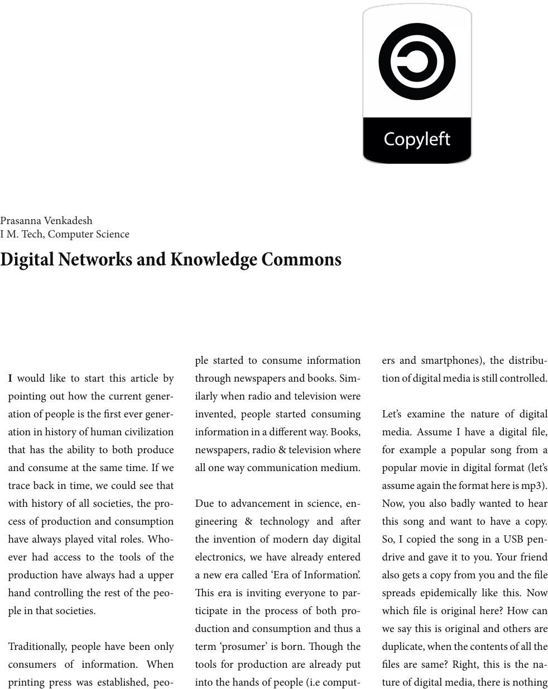

I would like to start this article by
pointing out how the current gener-
ation of people is the rst ever gener-
ation in history of human civilization
that has the ability to both produce
and consume at the same time. If we
trace back in time, we could see that
with history of all societies, the pro-
cess of production and consumption
have always played vital roles. Who-
ever had access to the tools of the
production have always had a upper
hand controlling the rest of the peo-
ple in that societies.
Traditionally, people have been only
consumers of information. When
printing press was established, peo-
ple started to consume information
through newspapers and books. Sim-
ilarly when radio and television were
invented, people started consuming
information in a dierent way. Books,
newspapers, radio & television where
all one way communication medium.
Due to advancement in science, en-
gineering & technology and aer
the invention of modern day digital
electronics, we have already entered
a new era called ‘Era of Information’.
is era is inviting everyone to par-
ticipate in the process of both pro-
duction and consumption and thus a
term ‘prosumer’ is born. ough the
tools for production are already put
into the hands of people (i.e comput-
ers and smartphones), the distribu-
tion of digital media is still controlled.
Let’s examine the nature of digital
media. Assume I have a digital le,
for example a popular song from a
popular movie in digital format (let’s
assume again the format here is mp3).
Now, you also badly wanted to hear
this song and want to have a copy.
So, I copied the song in a USB pen-
drive and gave it to you. Your friend
also gets a copy from you and the le
spreads epidemically like this. Now
which le is original here? How can
we say this is original and others are
duplicate, when the contents of all the
les are same? Right, this is the na-
ture of digital media, there is nothing
Digital Networks and Knowledge Commons
Prasanna Venkadesh
I M. Tech, Computer Science